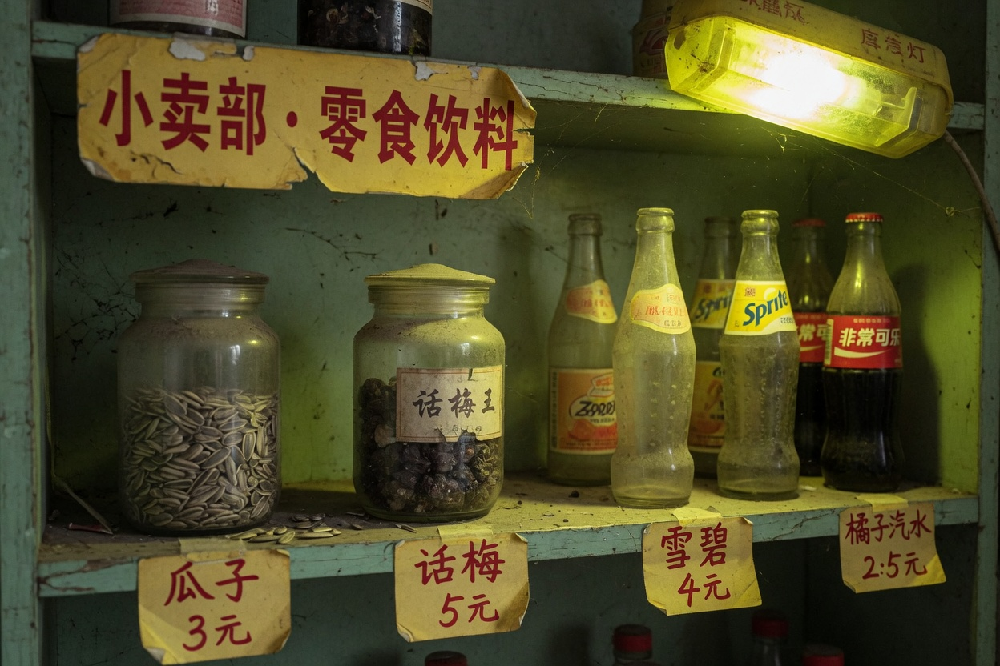

Snack counter

Sunflower seeds 3.5 dried plum 2 soda 4 no restock. Dates on the shelf stop in 2011.
Member Points cannot redeem snacks. Someone asked. Tianmai taped a note on the counter: Points only HoldSeat. The note got torn. The rule stayed.
Snacks are not the main line. Waste time here and ExtraShow still starts. When it starts it will not wait for you to finish a bag of seeds.
There is a tin in the till drawer. The tin does not sell snacks. The tin holds unclaimed Stub slips. That page is not in the snack nav.
The snack lamp is an emergency lamp. Emergency lamp stays on all year and still does not throw much light. Third shelf is empty and still has a price tag. Price tags are for habit. Habit lets people think they can still buy dried plum.
Someone stuffed a Points slip in the till, wanting a soda. Tianmai pushed the slip back. Points are not money. Things that are not money are harder to use. Hard rules get written short, short enough you think you understood.
The tin is not on the shelf. The tin is in a drawer sandwich. Sandwich was nailed later. The person who nailed it said do not let snacks and Stub sleep together. Sleep together and you mix them: one is for the mouth, one is for the seat.
Soda crates are stools. People who delivered prints sat on the stools. People who delivered prints asked if ExtraShow sells. Sell or not, the snack counter cannot answer. Questions it cannot answer, read the notice. The notice has a word. Take that word to the top bar.
Do not peel expired price tags. Peel them and later people will think the counter is still alive. What is alive is the seat, not the dried plum. Dried plum only makes the hall smell like it is still open.